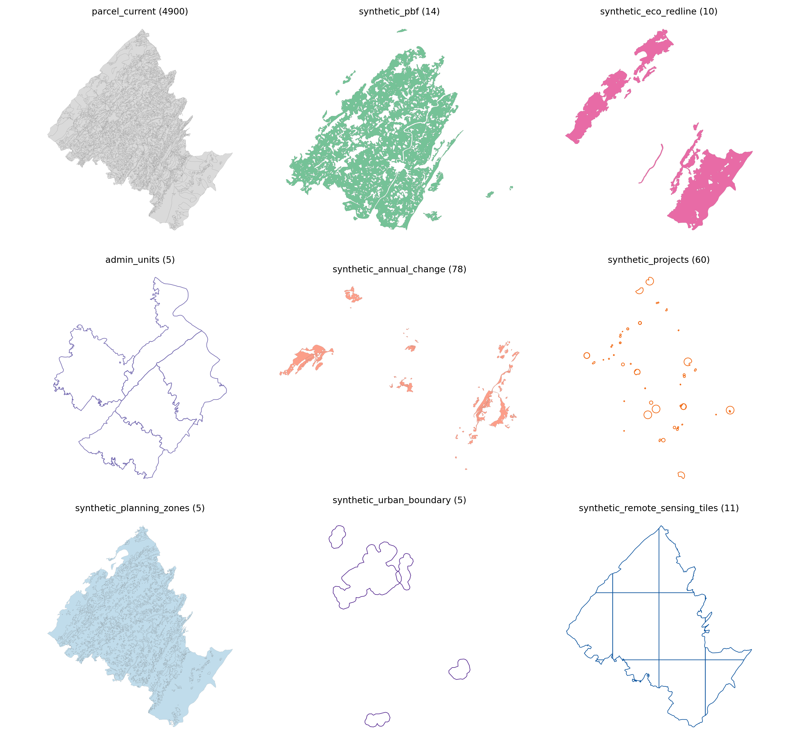
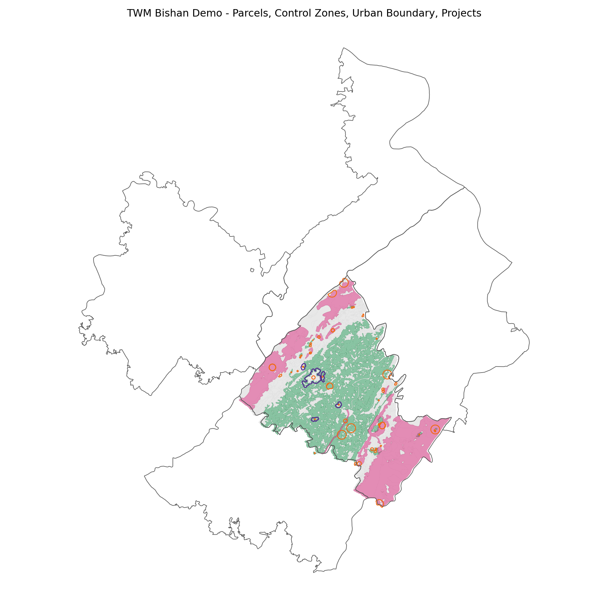
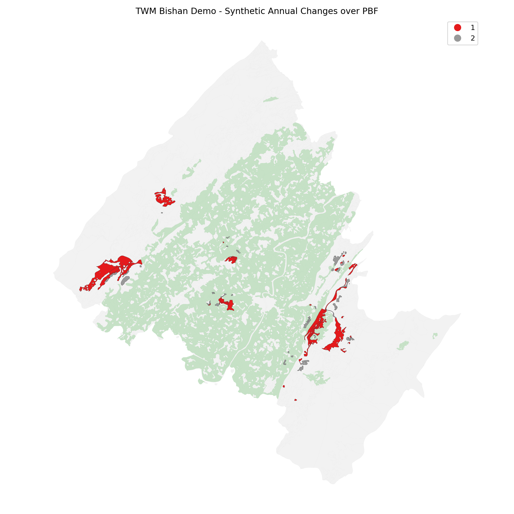
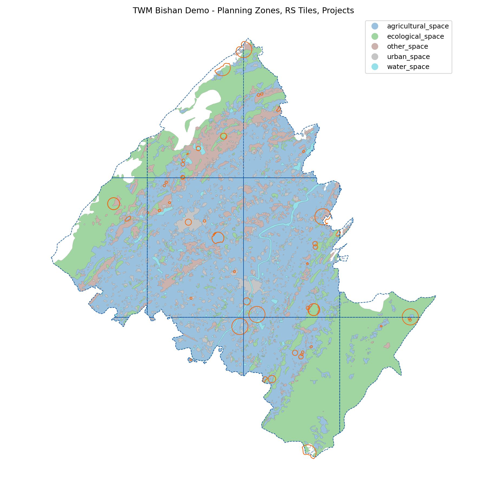
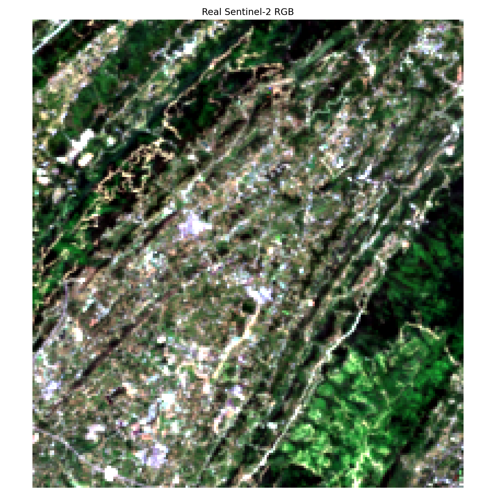
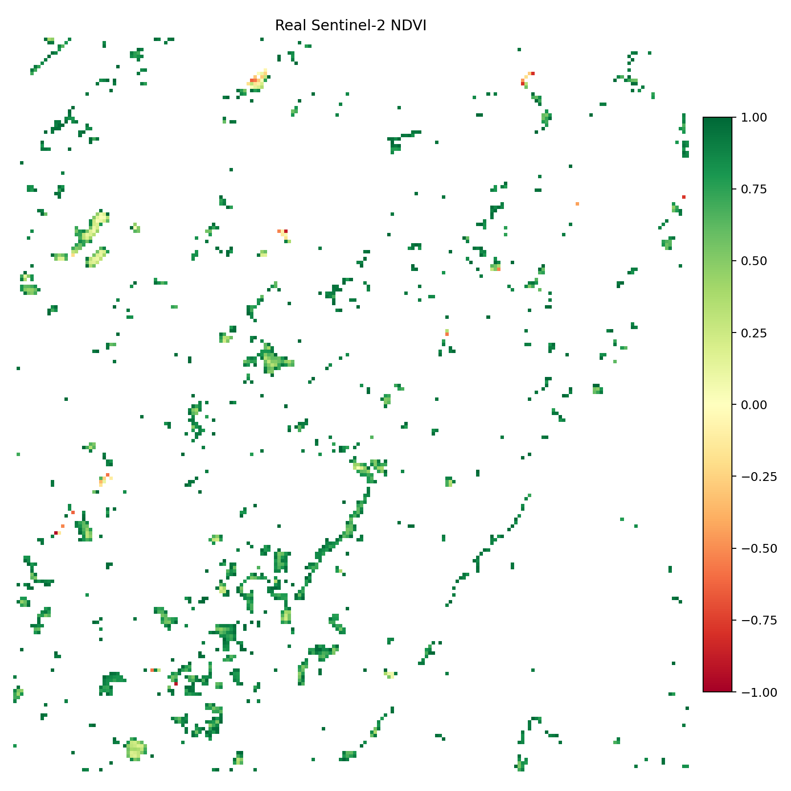

这些数据用于工程测试和演示。合成图层均带有 synthetic=true 和 not_for_production=true，不能用于生产级自然资源治理结论。
QGIS/ArcGIS: open data_agent/test_data/twm_bishan_demo/preview/twm_bishan_demo_layers.gpkg to inspect all layers together.
Manifest: open data_agent/test_data/twm_bishan_demo/dataset_manifest.json.
QA: open data_agent/test_data/twm_bishan_demo/data_quality_report.md.
| item | value |
|---|---|
| status | pass |
| blockers | 0 |
| warnings | 1 |
| warning |
|---|
| parcel_current: 59 features exceed 10% area mismatch |
| role | 中文名 | 业务角色 | rows | crs | geometry | synthetic | not_for_production | qa_use_for_rules | 说明 |
|---|---|---|---|---|---|---|---|---|---|
| parcel_current | 现状地类图斑 | 状态对象底板 | 4900 | EPSG:4326 | MultiPolygon, Polygon | {"False": 4900} | {"True": 4900} | {"True": 4841, "False": 59} | 从璧山 DLTB 坡度增强数据抽样得到的现状地类图斑。 |
| synthetic_pbf | 合成永久基本农田 | 耕地保护硬约束 | 14 | EPSG:4326 | Polygon | {"True": 14} | {"True": 14} | {"True": 14} | 基于低坡度、较大面积耕地图斑合成的永久基本农田演示层。 |
| synthetic_eco_redline | 合成生态保护红线 | 生态保护硬约束 | 10 | EPSG:4326 | Polygon | {"True": 10} | {"True": 10} | {"True": 10} | 基于林地、水域、高坡度图斑并局部缓冲合成的生态保护红线演示层。 |
| admin_units | 乡镇行政区边界 | 区域汇总与项目范围 | 5 | EPSG:4326 | Polygon | {"False": 5} | {"False": 5} | {"True": 5} | 从乡镇行政区边界数据中按演示区叠加筛选得到的行政边界参考层。 |
| synthetic_annual_change | 合成年度变化图斑 | 状态变化与时序证据 | 78 | EPSG:4326 | Polygon | {"True": 78} | {"True": 78} | {"True": 77, "False": 1} | 从 WorldModel v2.1 优化结果的 ORIG_DLBM 到 OPT_DLBM 派生的变化图斑。 |
| synthetic_projects | 合成建设项目范围 | 项目约束校验主体 | 60 | EPSG:4326 | MultiPolygon, Polygon | {"True": 60} | {"True": 60} | {"True": 60} | 按多类业务场景合成的拟建/调整项目范围，用于触线风险和审批一致性演示。 |
| synthetic_planning_zones | 合成用途管制分区 | 规划一致性约束 | 5 | EPSG:4326 | MultiPolygon | {"True": 5} | {"True": 5} | {"True": 5} | 由现状地类归并并 dissolve 得到的用途管制分区演示层。 |
| synthetic_urban_boundary | 合成城镇开发边界 | 城镇开发边界约束 | 5 | EPSG:4326 | Polygon | {"True": 5} | {"True": 5} | {"True": 5} | 由建设用地图斑聚合、缓冲、简化得到的城镇开发边界演示层。 |
| synthetic_remote_sensing_tiles | 合成遥感影像瓦片索引 | 多模态观测证据 | 11 | EPSG:4326 | MultiPolygon, Polygon | {"True": 11} | {"True": 11} | {"True": 11} | 覆盖演示区的合成遥感影像瓦片索引，用于 MMFE 多模态证据链测试。 |
| field | 中文别名 | 说明 |
|---|---|---|
| BSM | 标识码 | 原始地类图斑唯一标识。 |
| YSDM | 要素代码 | 自然资源调查监测要素代码。 |
| DLBM | 地类编码 | 土地利用分类编码。 |
| DLMC | 地类名称 | 土地利用分类中文名称。 |
| QSDWDM | 权属单位代码 | 图斑权属单位代码。 |
| QSDWMC | 权属单位名称 | 图斑权属单位中文名称。 |
| ZLDWDM | 坐落单位代码 | 图斑坐落单位代码。 |
| ZLDWMC | 坐落单位名称 | 图斑坐落单位中文名称。 |
| TBMJ | 图斑面积 | 原始图斑面积，单位通常为平方米。 |
| SHAPE_Length | 几何周长 | 源数据中的系统几何周长字段。 |
| SHAPE_Area | 几何面积 | 源数据中的系统几何面积字段。 |
| category | 归并地类 | 为 WorldModel 使用归并后的地类类别。 |
| slope_mean | 平均坡度 | 图斑范围内 DEM 派生平均坡度。 |
| slope_max | 最大坡度 | 图斑范围内 DEM 派生最大坡度。 |
| slope_pixel_count | 坡度像元数 | 参与坡度统计的像元数量。 |
| bsm_norm | 规范化标识码 | 去除浮点后缀后的稳定图斑标识。 |
| admin9 | 九位行政前缀 | 从权属单位代码截取的九位行政区划/乡镇前缀。 |
| qa_geometry_fixed | 几何修复标记 | true 表示生成时对源几何做过有效性修复或面提取。 |
| geom_area_m2 | 投影几何面积 | 按项目投影坐标系重新计算的几何面积，单位平方米。 |
| area_source_m2 | 源属性面积 | 源数据面积字段，优先来自 TBMJ，单位平方米。 |
| tbmj_area_rel_error | 面积相对误差 | 投影几何面积与源属性面积的相对误差。 |
| qa_area_warning | 面积异常标记 | true 表示几何面积与源属性面积偏差超过 QA 阈值。 |
| qa_use_for_rules | 可用于规则计算 | true 表示该要素通过基础质量门槛，可参与规则和合成数据生成。 |
| demo_role | 演示角色 | 该要素在 TWM demo 中承担的角色。 |
| demo_sample | 演示抽样标记 | 标记该要素是否来自演示抽样。 |
| synthetic | 是否合成 | true 表示该要素由脚本合成。 |
| not_for_production | 禁止生产使用 | true 表示只能用于工程测试和演示。 |
| source_dataset | 来源数据集 | 生成该要素所依据的源文件。 |
| TBYBH | 图斑预编号 | 自然资源一张图标准字段：图斑预编号。 |
| TBBH | 图斑编号 | 自然资源一张图标准字段：图斑编号。 |
| QSXZ | 权属性质 | 自然资源一张图标准字段：权属性质。 |
| KCDLBM | 扣除地类编码 | 自然资源一张图标准字段：扣除地类编码。 |
| KCXS | 扣除系数 | 自然资源一张图标准字段：扣除系数。 |
| KCMJ | 扣除面积 | 自然资源一张图标准字段：扣除面积。 |
| TBDLMJ | 图斑地类面积 | 自然资源一张图标准字段：图斑地类面积。 |
| GDLX | 耕地类型 | 自然资源一张图标准字段：耕地类型。 |
| GDPDJB | 耕地坡度级别 | 自然资源一张图标准字段：耕地坡度级别。 |
| TBXHDM | 图斑细化代码 | 自然资源一张图标准字段：图斑细化代码。 |
| TBXHMC | 图斑细化名称 | 自然资源一张图标准字段：图斑细化名称。 |
| ZZSXDM | 种植属性代码 | 自然资源一张图标准字段：种植属性代码。 |
| ZZSXMC | 种植属性名称 | 自然资源一张图标准字段：种植属性名称。 |
| CZCSXM | 城镇村属性码 | 自然资源一张图标准字段：城镇村属性码。 |
| SJNF | 数据年份 | 自然资源一张图标准字段：数据年份。 |
| MSSM | 描述说明 | 自然资源一张图标准字段：描述说明。 |
| GXSJ | 更新时间 | 自然资源一张图标准字段：更新时间。 |
| BZ | 备注 | 自然资源一张图标准字段：备注。 |
| field | 中文别名 | 说明 |
|---|---|---|
| BSM | 标识码 | 原始地类图斑唯一标识。 |
| YSDM | 要素代码 | 自然资源调查监测要素代码。 |
| XZQDM | 行政区代码 | 自然资源一张图标准字段：行政区代码。 |
| XZQMC | 行政区名称 | 自然资源一张图标准字段：行政区名称。 |
| YJJBNTTBBH | 永久基本农田图斑编号 | 自然资源一张图标准字段：永久基本农田图斑编号。 |
| TBBH | 图斑编号 | 自然资源一张图标准字段：图斑编号。 |
| DLBM | 地类编码 | 土地利用分类编码。 |
| DLMC | 地类名称 | 土地利用分类中文名称。 |
| QSXZ | 权属性质 | 自然资源一张图标准字段：权属性质。 |
| QSDWDM | 权属单位代码 | 图斑权属单位代码。 |
| QSDWMC | 权属单位名称 | 图斑权属单位中文名称。 |
| ZLDWDM | 坐落单位代码 | 图斑坐落单位代码。 |
| ZLDWMC | 坐落单位名称 | 图斑坐落单位中文名称。 |
| YJJBNTTBMJ | 永久基本农田图斑面积 | 自然资源一张图标准字段：永久基本农田图斑面积。 |
| YJJBNTMJ | 永久基本农田面积 | 自然资源一张图标准字段：永久基本农田面积。 |
| SJNF | 数据年份 | 自然资源一张图标准字段：数据年份。 |
| BHKSSJ | 保护开始时间 | 自然资源一张图标准字段：保护开始时间。 |
| BHJSSJ | 保护结束时间 | 自然资源一张图标准字段：保护结束时间。 |
| WDGD | 稳定利用耕地标识 | 自然资源一张图标准字段：稳定利用耕地标识。 |
| GDPDJB | 耕地坡度级别 | 自然资源一张图标准字段：耕地坡度级别。 |
| KCDLBM | 扣除地类编码 | 自然资源一张图标准字段：扣除地类编码。 |
| KCXS | 扣除系数 | 自然资源一张图标准字段：扣除系数。 |
| KCMJ | 扣除面积 | 自然资源一张图标准字段：扣除面积。 |
| GDLX | 耕地类型 | 自然资源一张图标准字段：耕地类型。 |
| TBXHDM | 图斑细化代码 | 自然资源一张图标准字段：图斑细化代码。 |
| TBXHMC | 图斑细化名称 | 自然资源一张图标准字段：图斑细化名称。 |
| GDZZSXDM | 耕地种植属性代码 | 自然资源一张图标准字段：耕地种植属性代码。 |
| GDZZSXMC | 耕地种植属性名称 | 自然资源一张图标准字段：耕地种植属性名称。 |
| CFZR | 承包方责任人 | 自然资源一张图标准字段：承包方责任人。 |
| ZRRMC | 责任人名称 | 自然资源一张图标准字段：责任人名称。 |
| SJBH | 数据编号 | 自然资源一张图标准字段：数据编号。 |
| SJMC | 数据名称 | 自然资源一张图标准字段：数据名称。 |
| BZ | 备注 | 自然资源一张图标准字段：备注。 |
| control_id | 管控区编号 | 合成永久基本农田管控区编号。 |
| control_name | 管控区名称 | 合成管控区中文名称。 |
| control_type | 管控区类型 | 管控区业务类型。 |
| control_grade | 管控区等级 | 合成永久基本农田保护等级。 |
| control_area_m2 | 管控区面积 | 合成永久基本农田面对象面积，单位平方米。 |
| source_bsm_count | 来源图斑数量 | 合成面对象覆盖或派生自的源图斑数量。 |
| source_bsms_sample | 来源图斑样例 | 合成对象关联源图斑的截断样例。 |
| effective_date | 生效日期 | 合成规则或管控边界的生效日期。 |
| synthetic | 是否合成 | true 表示该要素由脚本合成。 |
| synthetic_method | 合成方法 | 生成该图层或要素的合成方法。 |
| source_dataset | 来源数据集 | 生成该要素所依据的源文件。 |
| not_for_production | 禁止生产使用 | true 表示只能用于工程测试和演示。 |
| qa_geometry_fixed | 几何修复标记 | true 表示生成时对源几何做过有效性修复或面提取。 |
| geom_area_m2 | 投影几何面积 | 按项目投影坐标系重新计算的几何面积，单位平方米。 |
| qa_use_for_rules | 可用于规则计算 | true 表示该要素通过基础质量门槛，可参与规则和合成数据生成。 |
| field | 中文别名 | 说明 |
|---|---|---|
| BSM | 标识码 | 原始地类图斑唯一标识。 |
| YSDM | 要素代码 | 自然资源调查监测要素代码。 |
| XJXZQDM | 县级行政区代码 | 自然资源一张图标准字段：县级行政区代码。 |
| XJXZQMC | 县级行政区名称 | 自然资源一张图标准字段：县级行政区名称。 |
| LHLX | 陆海类型 | 自然资源一张图标准字段：陆海类型。 |
| MJ | 面积 | 自然资源一张图标准字段：面积。 |
| XJXZQHDM | 县级行政区划代码 | 自然资源一张图标准字段：县级行政区划代码。 |
| LXDM | 类型代码 | 自然资源一张图标准字段：类型代码。 |
| SLDM | 分类代码 | 自然资源一张图标准字段：分类代码。 |
| MC | 名称 | 自然资源一张图标准字段：名称。 |
| QYMJ | 区域面积 | 自然资源一张图标准字段：区域面积。 |
| SLSJ | 收录时间 | 自然资源一张图标准字段：收录时间。 |
| GKCS | 管控措施 | 自然资源一张图标准字段：管控措施。 |
| RKSL | 人口数量 | 自然资源一张图标准字段：人口数量。 |
| STGNYBHMB | 生态功能预保护目标 | 自然资源一张图标准字段：生态功能预保护目标。 |
| STXTYZBLX | 生态系统因子斑类型 | 自然资源一张图标准字段：生态系统因子斑类型。 |
| RWHDLX | 人为活动类型 | 自然资源一张图标准字段：人为活动类型。 |
| STHJWT | 生态环境问题 | 自然资源一张图标准字段：生态环境问题。 |
| BZ | 备注 | 自然资源一张图标准字段：备注。 |
| redline_id | 红线区编号 | 合成生态保护红线编号。 |
| redline_name | 红线区名称 | 合成生态保护红线区中文名称。 |
| zone_type | 分区类型 | 生态或规划分区类型。 |
| protection_level | 保护等级 | 合成生态保护红线保护等级。 |
| ecological_function | 生态功能 | 合成生态红线主要生态功能。 |
| redline_area_m2 | 红线区面积 | 合成生态保护红线面对象面积，单位平方米。 |
| source_bsm_count | 来源图斑数量 | 合成面对象覆盖或派生自的源图斑数量。 |
| source_bsms_sample | 来源图斑样例 | 合成对象关联源图斑的截断样例。 |
| effective_date | 生效日期 | 合成规则或管控边界的生效日期。 |
| synthetic | 是否合成 | true 表示该要素由脚本合成。 |
| synthetic_method | 合成方法 | 生成该图层或要素的合成方法。 |
| source_dataset | 来源数据集 | 生成该要素所依据的源文件。 |
| not_for_production | 禁止生产使用 | true 表示只能用于工程测试和演示。 |
| qa_geometry_fixed | 几何修复标记 | true 表示生成时对源几何做过有效性修复或面提取。 |
| geom_area_m2 | 投影几何面积 | 按项目投影坐标系重新计算的几何面积，单位平方米。 |
| qa_use_for_rules | 可用于规则计算 | true 表示该要素通过基础质量门槛，可参与规则和合成数据生成。 |
| field | 中文别名 | 说明 |
|---|---|---|
| admin_code | 行政单元代码 | 行政管理单元代码或稳定标识。 |
| admin_name | 行政单元名称 | 行政管理单元名称。 |
| admin_level | 行政层级 | 行政单元层级。 |
| admin_level_rank | 行政层级序号 | 用于排序的行政层级序号。 |
| admin_source_level | 行政来源层级 | 从权属单位代码截取或汇总形成的来源层级。 |
| province_name | 省级名称 | 乡镇边界数据中的省级行政名称。 |
| city_name | 市级名称 | 乡镇边界数据中的市级行政名称。 |
| county_name | 县区名称 | 乡镇边界数据中的县区行政名称。 |
| township_name | 乡镇街道名称 | 乡镇边界数据中的乡镇或街道名称。 |
| city_county_name | 市县组合名 | 乡镇边界数据中的市县组合名称。 |
| province_county_name | 省县组合名 | 乡镇边界数据中的省县组合名称。 |
| matched_admin9_values | 匹配九位行政前缀 | 该乡镇边界与演示图斑叠加匹配到的 admin9 前缀集合。 |
| matched_parcel_count | 匹配图斑数量 | 与该乡镇边界发生正面积叠加的演示图斑数量。 |
| overlap_area_m2 | 叠加面积 | 行政边界与演示图斑并集的正面积叠加面积，单位平方米。 |
| overlap_ratio_to_parcels | 图斑覆盖比例 | 行政边界叠加面积占演示图斑并集面积比例。 |
| synthetic | 是否合成 | true 表示该要素由脚本合成。 |
| synthetic_method | 合成方法 | 生成该图层或要素的合成方法。 |
| source_dataset | 来源数据集 | 生成该要素所依据的源文件。 |
| not_for_production | 禁止生产使用 | true 表示只能用于工程测试和演示。 |
| qa_geometry_fixed | 几何修复标记 | true 表示生成时对源几何做过有效性修复或面提取。 |
| geom_area_m2 | 投影几何面积 | 按项目投影坐标系重新计算的几何面积，单位平方米。 |
| qa_use_for_rules | 可用于规则计算 | true 表示该要素通过基础质量门槛，可参与规则和合成数据生成。 |
| field | 中文别名 | 说明 |
|---|---|---|
| change_id | 变化编号 | 合成年度变化事件编号。 |
| BSM | 标识码 | 原始地类图斑唯一标识。 |
| bsm_norm | 规范化标识码 | 去除浮点后缀后的稳定图斑标识。 |
| from_dlbm | 变化前地类编码 | 变化前土地利用分类编码。 |
| to_dlbm | 变化后地类编码 | 变化后土地利用分类编码。 |
| change_type | 变化类型 | 来自 WorldModel 输出的变化类型标记。 |
| change_year | 变化年份 | 合成变化所属年份。 |
| OPT_DLBM | 优化后地类编码 | WorldModel v2.1 输出的优化后地类编码。 |
| OPT_DLMC | 优化后地类名称 | WorldModel v2.1 输出的优化后地类名称。 |
| ORIG_DLBM | 原始地类编码 | WorldModel v2.1 输出中的原始地类编码。 |
| CHG_FLAG | 变化标记 | WorldModel v2.1 输出中的变化标记。 |
| synthetic | 是否合成 | true 表示该要素由脚本合成。 |
| synthetic_method | 合成方法 | 生成该图层或要素的合成方法。 |
| source_dataset | 来源数据集 | 生成该要素所依据的源文件。 |
| not_for_production | 禁止生产使用 | true 表示只能用于工程测试和演示。 |
| qa_geometry_fixed | 几何修复标记 | true 表示生成时对源几何做过有效性修复或面提取。 |
| geom_area_m2 | 投影几何面积 | 按项目投影坐标系重新计算的几何面积，单位平方米。 |
| area_source_m2 | 源属性面积 | 源数据面积字段，优先来自 TBMJ，单位平方米。 |
| tbmj_area_rel_error | 面积相对误差 | 投影几何面积与源属性面积的相对误差。 |
| qa_area_warning | 面积异常标记 | true 表示几何面积与源属性面积偏差超过 QA 阈值。 |
| qa_use_for_rules | 可用于规则计算 | true 表示该要素通过基础质量门槛，可参与规则和合成数据生成。 |
| field | 中文别名 | 说明 |
|---|---|---|
| YSDM | 要素代码 | 自然资源调查监测要素代码。 |
| XMDM | 项目代码 | 自然资源一张图标准字段：项目代码。 |
| DZJGH | 电子监管号 | 自然资源一张图标准字段：电子监管号。 |
| AJBH | 案卷编号 | 自然资源一张图标准字段：案卷编号。 |
| XMMC | 项目名称 | 自然资源一张图标准字段：项目名称。 |
| SQDW | 申请单位 | 自然资源一张图标准字段：申请单位。 |
| SZXZQDM | 所在行政区代码 | 自然资源一张图标准字段：所在行政区代码。 |
| SZXZQMC | 所在行政区名称 | 自然资源一张图标准字段：所在行政区名称。 |
| YDMJ | 用地面积 | 自然资源一张图标准字段：用地面积。 |
| ZYNYDMJ | 占用农用地面积 | 自然资源一张图标准字段：占用农用地面积。 |
| ZYGDMJ | 占用耕地面积 | 自然资源一张图标准字段：占用耕地面积。 |
| SJSTHXMJ | 涉及生态红线面积 | 自然资源一张图标准字段：涉及生态红线面积。 |
| ZYJSYDMJ | 占用建设用地面积 | 自然资源一张图标准字段：占用建设用地面积。 |
| ZYWLDMJ | 占用未利用地面积 | 自然资源一张图标准字段：占用未利用地面积。 |
| SQRQ | 申请日期 | 自然资源一张图标准字段：申请日期。 |
| GXRQ | 更新日期 | 自然资源一张图标准字段：更新日期。 |
| XMPZLX | 项目批准类型 | 自然资源一张图标准字段：项目批准类型。 |
| HYFLBM | 行业分类编码 | 自然资源一张图标准字段：行业分类编码。 |
| HYFLMC | 行业分类名称 | 自然资源一张图标准字段：行业分类名称。 |
| TDYTDM | 土地用途代码 | 自然资源一张图标准字段：土地用途代码。 |
| TDYTMC | 土地用途名称 | 自然资源一张图标准字段：土地用途名称。 |
| project_id | 项目编号 | 合成建设项目编号。 |
| project_name | 项目名称 | 合成建设项目名称。 |
| project_type | 项目类型 | 合成项目业务类型。 |
| approval_status | 审批状态 | 合成项目审批状态。 |
| risk_scenario | 风险场景 | 项目用于测试的规则风险场景。 |
| review_priority | 复核优先级 | 项目规则复核优先级。 |
| scenario_id | 方案编号 | 项目关联的 WorldModel 方案编号。 |
| planned_start | 计划开始日期 | 合成项目计划开始日期。 |
| planned_end | 计划结束日期 | 合成项目计划结束日期。 |
| planned_area_m2 | 项目计划面积 | 合成项目范围投影面积，单位平方米。 |
| related_change_ids | 关联变化编号集合 | 项目关联的年度变化编号，多个值用竖线分隔。 |
| synthetic | 是否合成 | true 表示该要素由脚本合成。 |
| synthetic_method | 合成方法 | 生成该图层或要素的合成方法。 |
| source_dataset | 来源数据集 | 生成该要素所依据的源文件。 |
| not_for_production | 禁止生产使用 | true 表示只能用于工程测试和演示。 |
| qa_geometry_fixed | 几何修复标记 | true 表示生成时对源几何做过有效性修复或面提取。 |
| geom_area_m2 | 投影几何面积 | 按项目投影坐标系重新计算的几何面积，单位平方米。 |
| qa_use_for_rules | 可用于规则计算 | true 表示该要素通过基础质量门槛，可参与规则和合成数据生成。 |
| field | 中文别名 | 说明 |
|---|---|---|
| BSM | 标识码 | 原始地类图斑唯一标识。 |
| YSDM | 要素代码 | 自然资源调查监测要素代码。 |
| XZQDM | 行政区代码 | 自然资源一张图标准字段：行政区代码。 |
| XZQMC | 行政区名称 | 自然资源一张图标准字段：行政区名称。 |
| GHFQDM | 规划分区代码 | 自然资源一张图标准字段：规划分区代码。 |
| GHFQMC | 规划分区名称 | 自然资源一张图标准字段：规划分区名称。 |
| MJ | 面积 | 自然资源一张图标准字段：面积。 |
| plan_zone_id | 用途分区编号 | 合成用途管制分区编号。 |
| plan_zone_type | 用途分区类型 | 合成用途管制分区类型。 |
| plan_zone_name | 用途分区名称 | 合成用途管制分区中文名称。 |
| plan_rule | 用途管制规则 | 该分区对应的合成用途准入规则。 |
| zone_area_m2 | 分区面积 | 用途管制分区面积，单位平方米。 |
| source_bsm_count | 来源图斑数量 | 合成面对象覆盖或派生自的源图斑数量。 |
| source_bsms_sample | 来源图斑样例 | 合成对象关联源图斑的截断样例。 |
| synthetic | 是否合成 | true 表示该要素由脚本合成。 |
| synthetic_method | 合成方法 | 生成该图层或要素的合成方法。 |
| source_dataset | 来源数据集 | 生成该要素所依据的源文件。 |
| not_for_production | 禁止生产使用 | true 表示只能用于工程测试和演示。 |
| qa_geometry_fixed | 几何修复标记 | true 表示生成时对源几何做过有效性修复或面提取。 |
| geom_area_m2 | 投影几何面积 | 按项目投影坐标系重新计算的几何面积，单位平方米。 |
| qa_use_for_rules | 可用于规则计算 | true 表示该要素通过基础质量门槛，可参与规则和合成数据生成。 |
| field | 中文别名 | 说明 |
|---|---|---|
| BSM | 标识码 | 原始地类图斑唯一标识。 |
| YSDM | 要素代码 | 自然资源调查监测要素代码。 |
| XZQDM | 行政区代码 | 自然资源一张图标准字段：行政区代码。 |
| XZQMC | 行政区名称 | 自然资源一张图标准字段：行政区名称。 |
| GHFQDM | 规划分区代码 | 自然资源一张图标准字段：规划分区代码。 |
| GHFQMC | 规划分区名称 | 自然资源一张图标准字段：规划分区名称。 |
| MJ | 面积 | 自然资源一张图标准字段：面积。 |
| CZMC | 城镇名称 | 自然资源一张图标准字段：城镇名称。 |
| XJXZQHDM | 县级行政区划代码 | 自然资源一张图标准字段：县级行政区划代码。 |
| CZKFMJ | 城镇开发面积 | 自然资源一张图标准字段：城镇开发面积。 |
| SLSJ | 收录时间 | 自然资源一张图标准字段：收录时间。 |
| boundary_id | 边界编号 | 合成城镇开发边界编号。 |
| boundary_type | 边界类型 | 城镇开发边界或其他边界类型。 |
| boundary_name | 边界名称 | 合成城镇开发边界中文名称。 |
| boundary_area_m2 | 边界面积 | 合成城镇开发边界面积，单位平方米。 |
| source_bsm_count | 来源图斑数量 | 合成面对象覆盖或派生自的源图斑数量。 |
| source_bsms_sample | 来源图斑样例 | 合成对象关联源图斑的截断样例。 |
| effective_date | 生效日期 | 合成规则或管控边界的生效日期。 |
| synthetic | 是否合成 | true 表示该要素由脚本合成。 |
| synthetic_method | 合成方法 | 生成该图层或要素的合成方法。 |
| source_dataset | 来源数据集 | 生成该要素所依据的源文件。 |
| not_for_production | 禁止生产使用 | true 表示只能用于工程测试和演示。 |
| qa_geometry_fixed | 几何修复标记 | true 表示生成时对源几何做过有效性修复或面提取。 |
| geom_area_m2 | 投影几何面积 | 按项目投影坐标系重新计算的几何面积，单位平方米。 |
| qa_use_for_rules | 可用于规则计算 | true 表示该要素通过基础质量门槛，可参与规则和合成数据生成。 |
| field | 中文别名 | 说明 |
|---|---|---|
| tile_id | 影像瓦片编号 | 合成遥感影像瓦片索引编号。 |
| modality | 模态类型 | 数据模态，例如 remote_sensing、vector、text。 |
| sensor | 传感器 | 合成影像瓦片对应的传感器名称。 |
| acquisition_date | 采集日期 | 合成影像瓦片采集日期。 |
| band_set | 波段组合 | 合成影像瓦片可用波段说明。 |
| cloud_cover_pct | 云量百分比 | 合成影像瓦片云量百分比。 |
| image_uri | 影像资源地址 | 影像文件或对象存储 URI。 |
| raster_product_id | 栅格产品编号 | 瓦片关联的合成栅格观测产品编号。 |
| raster_uri | 栅格资源地址 | 瓦片关联的 GeoTIFF 栅格资源相对路径。 |
| tile_area_m2 | 瓦片覆盖面积 | 合成遥感瓦片覆盖面积，单位平方米。 |
| synthetic | 是否合成 | true 表示该要素由脚本合成。 |
| synthetic_method | 合成方法 | 生成该图层或要素的合成方法。 |
| source_dataset | 来源数据集 | 生成该要素所依据的源文件。 |
| not_for_production | 禁止生产使用 | true 表示只能用于工程测试和演示。 |
| qa_geometry_fixed | 几何修复标记 | true 表示生成时对源几何做过有效性修复或面提取。 |
| geom_area_m2 | 投影几何面积 | 按项目投影坐标系重新计算的几何面积，单位平方米。 |
| qa_use_for_rules | 可用于规则计算 | true 表示该要素通过基础质量门槛，可参与规则和合成数据生成。 |
| metric | value |
|---|---|
| project_pbf_intersections | 39 |
| project_pbf_unique_projects | 34 |
| project_eco_intersections | 28 |
| project_eco_unique_projects | 28 |
| annual_change_pbf_intersections | 37 |
| annual_change_pbf_unique_changes | 37 |
| project_planning_intersections | 151 |
| project_planning_unique_projects | 60 |
| project_rs_tile_intersections | 71 |
| project_rs_tile_unique_projects | 60 |
| overlay | raw_intersections | touch_or_lt_threshold | positive_intersections | unique_left | unique_right | mean_overlap_ratio_left | p50_overlap_ratio_left | gt_99pct_left | partial_gt_1pct_left |
|---|---|---|---|---|---|---|---|---|---|
| project_pbf | 39 | 0 | 39 | 34 | 14 | 0.483445 | 0.459701 | 8 | 31 |
| project_eco | 28 | 0 | 28 | 28 | 10 | 0.76613 | 0.971153 | 12 | 16 |
| project_planning | 151 | 0 | 151 | 60 | 5 | 0.38462 | 0.286137 | 12 | 125 |
| pbf_eco | 9 | 0 | 9 | 8 | 5 | 0.20444 | 0.115221 | 0 | 6 |
| relation | rows | unique_projects | columns |
|---|---|---|---|
| change_parcel_rel | 78 | 0 | relation_id, relation_type, change_id, bsm_norm, match_type, confidence, synthetic, not_for_production |
| project_eco_rel | 28 | 28 | relation_id, relation_type, project_id, redline_id, right_role, overlap_area_m2, overlap_ratio_left, overlap_ratio_right |
| project_parcel_rel | 354 | 60 | relation_id, relation_type, project_id, bsm_norm, right_role, overlap_area_m2, overlap_ratio_left, overlap_ratio_right |
| project_pbf_rel | 39 | 34 | relation_id, relation_type, project_id, control_id, right_role, overlap_area_m2, overlap_ratio_left, overlap_ratio_right |
| project_planning_rel | 151 | 60 | relation_id, relation_type, project_id, plan_zone_id, right_role, overlap_area_m2, overlap_ratio_left, overlap_ratio_right |
| project_rs_tile_rel | 71 | 60 | relation_id, relation_type, project_id, tile_id, right_role, overlap_area_m2, overlap_ratio_left, overlap_ratio_right |
| project_urban_boundary_rel | 7 | 7 | relation_id, relation_type, project_id, boundary_id, right_role, overlap_area_m2, overlap_ratio_left, overlap_ratio_right |
| table | rows | unique_projects | columns |
|---|---|---|---|
| approval_records | 60 | 60 | YSDM, DKBH, DKMC, DKMJ, DKXZQDM, DKXZQMC, DKYTDM, DKYTMC |
| enforcement_events | 92 | 51 | BSM, YSDM, WFXWZJ, WFDKXH, YGTBZJ, XZQDM, JCSDQ, JCSDH |
| metadata_vector | 9 | 0 | data_id, resource_id, data_name, data_alias, data_des, data_format, data_type, data_size |
| multimodal_evidence_index | 166 | 0 | evidence_id, evidence_type, evidence_uri, linked_object_id, linked_object_type, observed_date, confidence, synthetic |
| review_tasks | 92 | 51 | review_task_id, enforcement_id, project_id, rule_eval_id, task_status, reviewer_role, due_date, review_result |
| rule_evaluation | 240 | 60 | rule_eval_id, project_id, rule_id, rule_name_zh, severity, finding_status, finding_basis, metric_value |
| standard_field_catalog | 267 | 0 | field_name, field_alias_zh, lifecycle_status, introduced_version, deprecated_version, replacement_field, standard_version, synthetic |
| state_snapshots | 10 | 0 | snapshot_year, temporal_stage, land_space_type, feature_count, area_m2, area_delta_m2, source_dataset, synthetic |
| raster | 中文名 | path | size | crs | valid_pixels | mean | synthetic |
|---|---|---|---|---|---|---|---|
| synthetic_ndvi_2026 | 合成NDVI观测栅格 | rasters/synthetic_ndvi_2026.tif | 256x256 | EPSG:32648 | 27078 | 0.628087 | True |
| synthetic_change_intensity_2026 | 合成变化强度栅格 | rasters/synthetic_change_intensity_2026.tif | 256x256 | EPSG:32648 | 27078 | 0.060754 | True |
| product | path | type | selected_date | avg_cloud_cover | synthetic |
|---|---|---|---|---|---|
| sentinel2_l2a_reflectance_stack | real_imagery/sentinel2_l2a_reflectance_stack.tif | reflectance_stack | 2025-08-03 | 0.087723 | False |
| sentinel2_l2a_rgb | real_imagery/sentinel2_l2a_rgb.tif | visual_rgb | 2025-08-03 | 0.087723 | False |
| sentinel2_l2a_ndvi | real_imagery/sentinel2_l2a_ndvi.tif | spectral_index | 2025-08-03 | 0.087723 | False |
| sentinel2_l2a_scl | real_imagery/sentinel2_l2a_scl.tif | scene_classification | 2025-08-03 | 0.087723 | False |
| metric | value |
|---|---|
| parcel_bbox_coverage_ratio | 0.4394 |
| parcel_connected_components | 6 |
| parcel_largest_component_features | 4893 |
| parcel_largest_component_ratio | 0.9986 |






| project_id | control_id |
|---|---|
| PRJ-DEMO-0000 | PBF-DEMO-00000 |
| PRJ-DEMO-0001 | PBF-DEMO-00001 |
| PRJ-DEMO-0003 | PBF-DEMO-00002 |
| PRJ-DEMO-0006 | PBF-DEMO-00003 |
| PRJ-DEMO-0008 | PBF-DEMO-00008 |
| PRJ-DEMO-0009 | PBF-DEMO-00009 |
| PRJ-DEMO-0010 | PBF-DEMO-00013 |
| PRJ-DEMO-0012 | PBF-DEMO-00000 |
| PRJ-DEMO-0014 | PBF-DEMO-00003 |
| PRJ-DEMO-0014 | PBF-DEMO-00011 |
| PRJ-DEMO-0016 | PBF-DEMO-00002 |
| PRJ-DEMO-0017 | PBF-DEMO-00003 |
| PRJ-DEMO-0017 | PBF-DEMO-00011 |
| PRJ-DEMO-0022 | PBF-DEMO-00005 |
| PRJ-DEMO-0023 | PBF-DEMO-00002 |
| PRJ-DEMO-0024 | PBF-DEMO-00010 |
| PRJ-DEMO-0025 | PBF-DEMO-00003 |
| PRJ-DEMO-0025 | PBF-DEMO-00011 |
| PRJ-DEMO-0026 | PBF-DEMO-00001 |
| PRJ-DEMO-0026 | PBF-DEMO-00000 |
| project_id | redline_id |
|---|---|
| PRJ-DEMO-0002 | ECO-DEMO-00002 |
| PRJ-DEMO-0003 | ECO-DEMO-00003 |
| PRJ-DEMO-0007 | ECO-DEMO-00007 |
| PRJ-DEMO-0010 | ECO-DEMO-00000 |
| PRJ-DEMO-0011 | ECO-DEMO-00001 |
| PRJ-DEMO-0015 | ECO-DEMO-00005 |
| PRJ-DEMO-0016 | ECO-DEMO-00003 |
| PRJ-DEMO-0018 | ECO-DEMO-00008 |
| PRJ-DEMO-0019 | ECO-DEMO-00009 |
| PRJ-DEMO-0023 | ECO-DEMO-00003 |
| PRJ-DEMO-0026 | ECO-DEMO-00006 |
| PRJ-DEMO-0027 | ECO-DEMO-00007 |
| PRJ-DEMO-0030 | ECO-DEMO-00000 |
| PRJ-DEMO-0031 | ECO-DEMO-00001 |
| PRJ-DEMO-0034 | ECO-DEMO-00004 |
| PRJ-DEMO-0035 | ECO-DEMO-00005 |
| PRJ-DEMO-0039 | ECO-DEMO-00009 |
| PRJ-DEMO-0041 | ECO-DEMO-00000 |
| PRJ-DEMO-0042 | ECO-DEMO-00002 |
| PRJ-DEMO-0043 | ECO-DEMO-00003 |
| project_id | plan_zone_id |
|---|---|
| PRJ-DEMO-0000 | PLAN-DEMO-003 |
| PRJ-DEMO-0000 | PLAN-DEMO-000 |
| PRJ-DEMO-0000 | PLAN-DEMO-001 |
| PRJ-DEMO-0001 | PLAN-DEMO-003 |
| PRJ-DEMO-0001 | PLAN-DEMO-000 |
| PRJ-DEMO-0001 | PLAN-DEMO-001 |
| PRJ-DEMO-0001 | PLAN-DEMO-002 |
| PRJ-DEMO-0002 | PLAN-DEMO-003 |
| PRJ-DEMO-0002 | PLAN-DEMO-000 |
| PRJ-DEMO-0002 | PLAN-DEMO-001 |
| PRJ-DEMO-0002 | PLAN-DEMO-002 |
| PRJ-DEMO-0003 | PLAN-DEMO-000 |
| PRJ-DEMO-0003 | PLAN-DEMO-001 |
| PRJ-DEMO-0004 | PLAN-DEMO-003 |
| PRJ-DEMO-0005 | PLAN-DEMO-003 |
| PRJ-DEMO-0005 | PLAN-DEMO-000 |
| PRJ-DEMO-0005 | PLAN-DEMO-001 |
| PRJ-DEMO-0006 | PLAN-DEMO-003 |
| PRJ-DEMO-0006 | PLAN-DEMO-000 |
| PRJ-DEMO-0007 | PLAN-DEMO-004 |